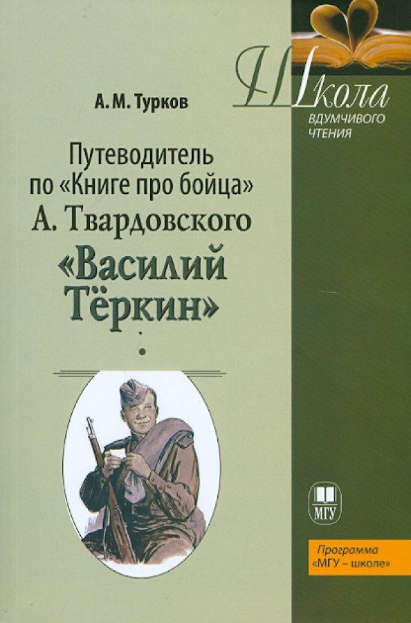
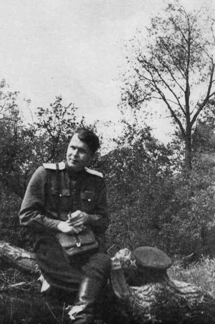

«Василий Тёркин»
📖 История создания
Герой по имени Василий Тёркин впервые появился в газете Ленинградского военного округа «На страже Родины» в 1939–1940 годах, во время советско-финской войны. Это был фельетонный персонаж — весёлый, удачливый боец, громивший белофиннов. В создании серии фельетонов участвовали поэты и писатели: Николай Щербаков, Цезарь Солодарь, Николай Тихонов и другие. Твардовскому поручили написать предисловие и дать «портрет» героя — так родился Вася Тёркин, балагур и умелец.
Когда началась Великая Отечественная война, Твардовский вернулся к замыслу, но уже серьёзно. Он решил написать не фельетон, а «Книгу про бойца», как сам называл своё произведение, избегая слова «поэма». Первые главы — «На привале», «Переправа», «Гармонь» — были опубликованы в 1942 году во фронтовой печати и сразу полюбились солдатам. Письма с фронта приходили мешками: бойцы просили продолжения, предлагали сюжеты, спорили о характере героя.
Твардовский работал над поэмой всю войну, публикуя новые главы по мере продвижения советских войск на запад. Он читал главы солдатам прямо в окопах, в госпиталях, на передовой, правя текст по их подсказкам. «Книга про бойца» стала поистине народным произведением. Последние главы — «В бане» и «От автора» — были закончены в 1945 году. Завершённая поэма получила название «Василий Тёркин. Книга про бойца».
В 1946 году поэма была удостоена Сталинской премии I степени. Сам автор говорил: «Василий Тёркин — это мой герой, выстраданный за годы войны. Я обязан ему жизнью, потому что, работая над ним, я сам становился лучше, чище, сильнее».
⭐ Образ Василия Тёркина
Василий Тёркин — собирательный образ русского солдата. Твардовский намеренно отказался от героического пафоса: его Тёркин — «просто парень сам собой, он обыкновенный». В нём нет ничего сверхъестественного, он не былинный богатырь, а такой же, как миллионы его товарищей по оружию. Весёлый, находчивый, смелый, неунывающий. Он не теряет чувства юмора даже в самых тяжёлых ситуациях — в мокром болоте («Переправа»), под бомбёжкой («Гармонь»), после ранения («Смерть и воин»).
При этом Тёркин не просто балагур. Он — умелец на все руки: часы починит, гармонь настроит, кашу сварит («не гляди, что на груди, а гляди, что впереди»). Он храбрый солдат («смертный бой не ради славы, ради жизни на земле»), патриот, тоскующий по родной Смоленщине («О родине»). Он не боится смерти, но и не ищет её — он делает своё солдатское дело.
Твардовский намеренно избегал «биографии» героя: неизвестно, откуда он, где родился, сколько лет. Это делало образ универсальным — каждый солдат мог узнать в Тёркине себя или своего товарища. Особенность поэмы — в её композиции: нет единого сюжета, главы можно читать в любом порядке, как «фронтовые будни». Герой не растёт, не меняется — он просто живёт и воюет, как живут и воюют миллионы.
Смертный бой не ради славы,
Ради жизни на земле.»
— в этих строках — кредо Тёркина и всего русского солдата.
🎭 Художественное своеобразие и язык
Поэма написана четырехстопным хореем — размером, характерным для песен, частушек, народного творчества. Это делает текст музыкальным, легко запоминающимся. Твардовский широко использует афоризмы, поговорки, присказки, народные речевые обороты. Многие фразы из «Тёркина» стали крылатыми, вошли в русский язык: «Города сдают солдаты, генералы их берут», «Дальше фронта не пошлют», «Тёркин — кто же он такой? Скажем откровенно: просто парень сам собой, он обыкновенный», «Смерть — она своё возьмёт, а живой — живи».
Жанровая природа поэмы сложна и уникальна. Исследователи находят в ней и сказку, и быль, и фельетон, и житейское поучение, и лирический дневник. Сам автор настаивал на определении «Книга про бойца», подчёркивая тем самым связь с народной традицией и «всеобщность» содержания. Это не поэма в классическом смысле — в ней нет последовательного сюжета, завязки и развязки. Это мозаика фронтовой жизни, где каждая глава — законченный эпизод.
Язык поэмы — это живая разговорная речь солдата, без фальши и литературщины. Твардовский сознательно избегал высоких слов, пафосных оборотов. Он писал так, как говорят в окопе, в землянке, на привале. Именно эта простота и сделала поэму народной.
🏆 Значение в русской литературе
«Василий Тёркин» — вершина творчества Твардовского и одно из самых значительных произведений русской литературы XX века. Поэма сочетает трагизм, юмор, героику и лиризм. Живой, разговорный язык сделал её понятной каждому солдату — её читали в окопах, заучивали наизусть, переписывали от руки, посылали в письмах домой.
Высокую оценку поэме дали Иван Бунин (назвал её «талантливой, народной, умной книгой»), Борис Пастернак, Анна Ахматова. Поэма остаётся в школьной программе, многократно переиздавалась, была переведена на десятки языков.
Памятники Тёркину установлены в Смоленске и Осташкове. В 1995 году в Смоленске на родине поэта был открыт бронзовый памятник Василию Тёркину — с гармонью в руках, каким его изобразил художник Орест Верейский. В 2015 году памятник появился и в Осташкове, где дислоцировалась воинская часть, в которой служил прототип героя.
«Книга про бойца» стала не просто литературным, но и культурным феноменом, воплотившим народный характер, солдатскую смекалку и несгибаемую волю к победе. И сегодня, спустя десятилетия, поэма читается как живое, современное произведение — о мужестве, о дружбе, о любви к Родине.

📖 Первое отдельное издание, 1951 год. Художник Орест Верейский

🎖️ Твардовский на фронте, 1943 год — таким увидел его художник